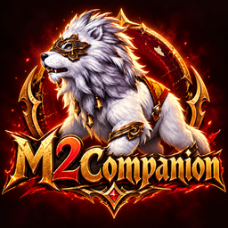

M2 COMPANION
Yut Nori Helper
BETAPlayerP1: HOME · P2: HOME
0/2
Reward
Gold
ComputerC1: HOME · C2: HOME
0/2
Roll referenceVisual guide
Do+1 space
Gae+2 spaces
Geol+3 spaces
Yut+4 · bonus
Mo+5 · bonus
Back Do−1 space